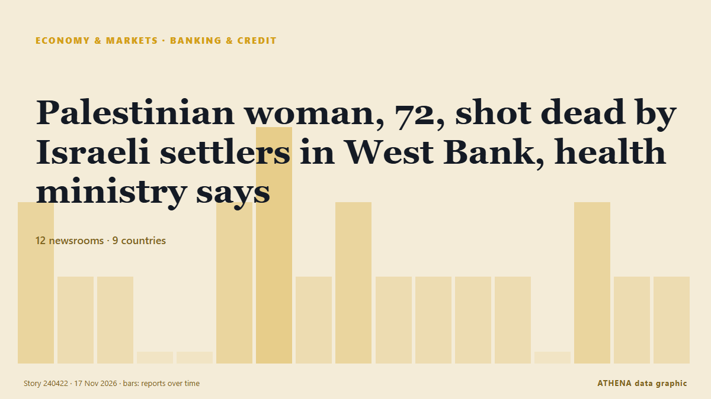

Banking & credit
SponsoredPresented by  Cybernetics and Artificial Intelligence Lab Welcome to the Cybernetics and Artificial Intelligence Laboratory, established at the Department of Business Administration of the National and Kapodistrian University of Athens. The lab is headed by Professor Dimitrios Thomakos. The lab aims to do research that can be published in top venues. Our research uses tools and methods of Artificial Intelligence, and lies in the following areas: - Forecasting - Decision making - Cyber security - Finance We are always looking forward to collaborating with exceptional students!
Cybernetics and Artificial Intelligence Lab Welcome to the Cybernetics and Artificial Intelligence Laboratory, established at the Department of Business Administration of the National and Kapodistrian University of Athens. The lab is headed by Professor Dimitrios Thomakos. The lab aims to do research that can be published in top venues. Our research uses tools and methods of Artificial Intelligence, and lies in the following areas: - Forecasting - Decision making - Cyber security - Finance We are always looking forward to collaborating with exceptional students!
| 5 Nov | 0 |
|---|---|
| 6 Nov | 0 |
| 7 Nov | 1 |
| 8 Nov | 0 |
| 9 Nov | 0 |
| 10 Nov | 0 |
| 11 Nov | 0 |
| 12 Nov | 0 |
| 13 Nov | 2 |
| 14 Nov | 1 |
| 15 Nov | 4 |
| 16 Nov | 12 |
| 17 Nov | 4 |
| 18 Nov | 0 |

Palestinian woman, 72, shot dead by Israeli settlers in West Bank, health ministry says
Palestinians say there was an attack by settlers in al-Duyuk al-Tahta, while the Israeli military says the settlers fired after being attacked. from BBC News
President of Uzbekistan concludes visit to Oman
Muscat: President Shavkat Mirziyoyev of the Republic of Uzbekistan, and his accompanying delegation left the country today following a two-day state visit to the Sultanate of Oman.... from Oman Observer
New Zealand Central Bank Warns of Rising Global Risks, Private Credit Exposure
New Zealand’s central bank warned on Tuesday that global financial stability risks continue to rise, with growing vulnerabilities in the non-bank lending sector driven by increased private credit… from Insurance Journal
BoG warns strong El Niño could affect food prices, cocoa and cedi
Dr Johnson Pandit Asiama, Governor of the Bank of Ghana (BoG), Monday warned that an unusually strong El Niño episode could affect agricultural production across West Africa, including Ghana. from MyJoyOnline
West Bank’s displaced Palestinians hold little hope for post-Netanyahu era
Palestinians fear Israel’s policies towards them will remain unchanged even if former general Gadi Eisenkot replaces Benjamin Netanyahu as leader. from Free Malaysia Today
Global banks set to enter 2027 on strong footing, Moody's report says
KUALA LUMPUR: Global economic growth is expected to slow over the next two years as geopolitical tensions, trade disruptions and uncertainty surrounding the artificial intelligence (AI) boom threaten… from New Straits Times
A technical issue at JPMorgan Chase triggers online banking delays for major US banks
JPMorgan Chase blamed a software bug in its own on-premise hardware for Monday’s online banking problems at several big US banks. from The Next Web
US banking app users report outages from software bugs
WASHINGTON: American users of several major banking apps and online portals reported outages on Monday, according to monitoring site Downdetector.com, with one institution ruling out a cyberattack as… from New Straits Times
Downdetector reports outages at major US banks
User reports on Monday indicated problems at JPMorgan Chase, Bank of America, U.S. from The Korea Times
Brussels will present plan for €45B Ukraine loan backed by EU budget
The loan aims to keep Ukraine financially afloat in the coming year — and it needs the backing of all EU leaders. from Politico Europe
Norway’s biggest bank DNB to raise card fees
Prices in Norway continue to rise, and some increases can easily go unnoticed. from The Local Norway
'Dalit oppression, land grab': BJP hits back at Akhilesh over 'Damdar Dalit' remarks
In response to Akhilesh Yadav's recent appeal to the Dalit community, BJP leaders have launched a series of critiques against the Samajwadi Party chief. from Times of India
DBS, JPMorgan launch instant tokenized deposit transfers between US and Singapore
Ant International is their first client, deploying the service for treasury and liquidity management across its entities in both markets. from The Block
‘Escaping extreme poverty and Naxalism has improved tribal lives’, says PM Modi
PM cites World Bank report to claim that 50 crore Indians have escaped extreme poverty over last 12 to 13 years; says 125 districts were Naxal-affected in 2014, as previous regimes closed their eyes… from The Hindu
Kenya: Ruto Hits Back At Opposition Over SGR Corruption Claims
[Capital FM] Nairobi -- President William Ruto has challenged opposition leaders over their interpretation of a World Bank report that raises concerns about corruption and procurement weaknesses in… from AllAfrica
Kenanga Investment Bank Partners with Huatai Securities to Deepen Malaysia-China Capital Market Cooperation
Strategic collaboration to strengthen market connectivity and expand cross-border investment KUALA LUMPUR, MALAYSIA – Media OutReach Newswire – 16 November 2026 – As an extension of its regional… from Laotian Times
Israeli military jeep runs over, injures 2 Palestinians in occupied West Bank
Troops beat Palestinian workers in Bethlehem governorate while Israeli occupiers attack home and damage property elsewhere. from Anadolu Agency (English)
NRL reveals 2027 Magic Round matches, Broncos headline Thursday clash
The NRL will bank on the crowd-pulling status of a Brisbane and Penrith clash to quell their Thursday night fears and keep all of Magic Round at Lang Park in 2027. from ABC News Australia
Dubai Police bust gang who recruited people to open bank accounts for investment fraud
Dubai Police have arrested members of a gang accused of investment fraud. from Khaleej Times (working feed)